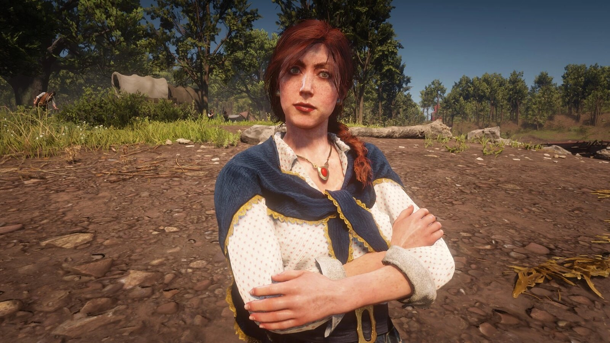
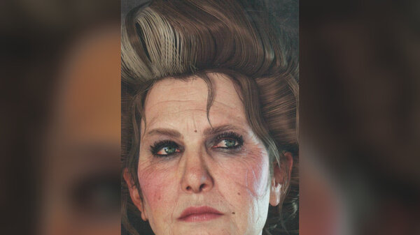
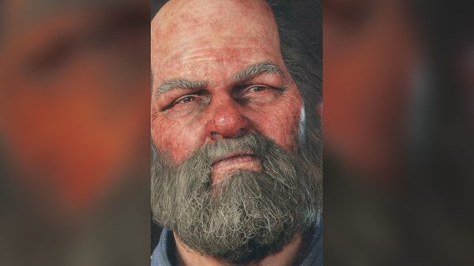
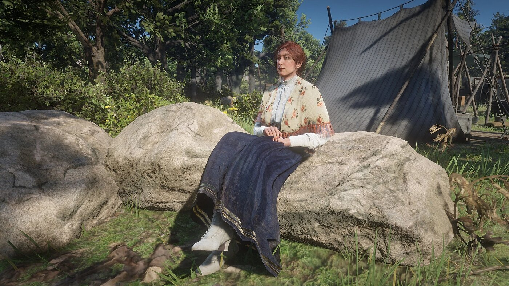

Character · Van der Linde gang
Molly O'Shea
Molly O'Shea is an Irish member of the Van der Linde gang in Red Dead Redemption 2, and the companion of Dutch van der Linde. Rockstar describes her as "a Dublin girl and the object of Dutch's affection, for now at least".
She dies in 1899, shot by Susan Grimshaw after falsely claiming to have informed the Pinkertons about the gang.
- Origin
- Dublin, Ireland
- Died
- 1899, Beaver Hollow
- Status
- Deceased
- Affiliation
- Van der Linde gang
- Relationship
- Dutch van der Linde (companion)
- Voiced by
- Penny O'Brien
- Games
- Red Dead Redemption 2
Biography
Background
Molly comes from Dublin and has a working-class Dublin accent, like Sean MacGuire. She says she comes from a wealthy family. She came to America in search of adventure and met Dutch before 1899. The game never says how or when she joined the gang.
Chapter 1: Colter Chapter guide →
In "Outlaws from the West", Susan Grimshaw tells Dutch that "Miss O'Shea" will show him the way to his cabin.
Chapter 2: Horseshoe Overlook Chapter guide →
Molly spends most of her time in Dutch's tent. A poem she wrote, titled "Uaibhreach", can be read there; the word is Irish for pride or arrogance.
When Arthur carries a drunken Reverend Swanson back to camp in "Who is Not Without Sin", she remarks that she was wondering when he would show up.
She does not join the women's trip to Valentine in "Polite Society, Valentine Style". When Tilly asks whether they should have invited her, Karen answers that Molly is "far too high and mighty now" and calls her "a society lady".
Chapter 3: Clemens Point Chapter guide →
In "An Honest Mistake", Molly starts to confide in Arthur about Dutch. Uncle interrupts them with a tip about a supply wagon.
In this chapter only, she can ask Arthur for a pocket mirror, which can be found at Martha's Swain in Ambarino. She gives him a cigar in return. The request is optional and can be missed.
Chapter 4: Saint Denis Chapter guide →
At the Shady Belle camp, Molly shares the master bedroom with Dutch. In "The Battle of Shady Belle", she asks Dutch for a word and he answers "Not now". Riding off, Dutch tells Arthur he has "far more important things to worry about right now than Molly O'Shea".
Death
That's Murfree Country Chapter guide →
After the gang returns from Guarma, it moves to a new camp at Beaver Hollow, in Roanoke Ridge. At the end of "That's Murfree Country", Uncle brings Molly back drunk; he says he found her in Saint Denis.
In front of the camp, she claims she told the Pinkertons about the Saint Denis bank plan so that they would kill Dutch. Dutch draws his revolver, and Arthur tries to stop him. Susan Grimshaw shoots Molly in the stomach with a shotgun.
Grimshaw tells Arthur that Molly "knew the rules", and orders Bill and Pearson to burn the body. The scene is part of the main story.
A false confession
Her confession was false. In the mission "Red Dead Redemption", Pinkerton agent Andrew Milton tells Arthur that they questioned Molly a couple of times, that she "never talked", and that they had to let her go. Milton names Micah Bell as the informant.
In the final confrontation, Arthur tells Dutch that Micah is the rat: "Not Molly, Dutch. Him."
Relationships

Dutch van der Linde
Her companion. He grows dismissive of her over the course of 1899.

Susan Grimshaw
Shoots her at Beaver Hollow after her confession.

Arthur Morgan
The one she starts to confide in, and the one who tries to save her.

Karen Jones
Mocks her in chapter 2, then turns on Grimshaw after her death.

Uncle
Brings her back drunk from Saint Denis on the night she dies.
In the camp
- She never does camp chores. Her line to Arthur: "I'm nobody's servant girl, Mr. Morgan."
- She never rides a horse and never joins Arthur on a mission.
- She has red hair and wears a green corseted top with gold trim, a red skirt and white boots.
- Tilly is the first to wonder whether Molly should have been invited to Valentine. After her death, Karen turns on Grimshaw.
Behind the scenes
Molly O'Shea is played by Penny O'Brien, an Irish actress born in County Wicklow, who provided both the voice and the motion capture. A grave for Molly exists in the game files but is not used in the game.
Gallery
